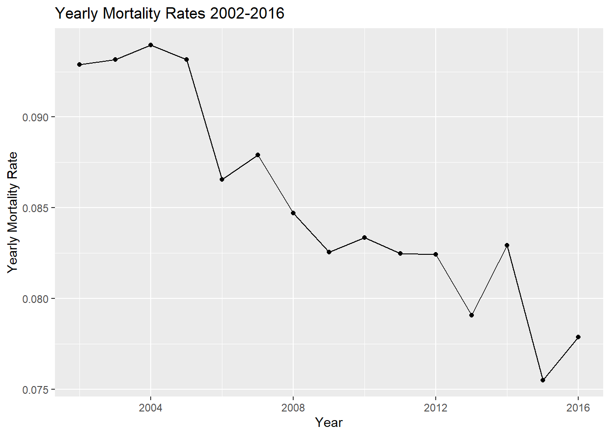

Load the HistData package. Create a galton_height data with the father’s height and one randomly selected daughter from each family. Exclude families with no female children. Set the seed at 2007 and use the function sample_n to select the random child. You should end up with a heights dataset with two columns: father and daughter.
Estimate the intercept and slope of the regression line for predicting daughter height \(Y\) using father height \(X\). Use the following regression line formula:
Make a plot to confirm the regression line goes through the data.
library(ggplot2)heights |>ggplot(aes(father, daughter)) +geom_point() +geom_abline(intercept = intercept, slope = slope) +labs(x ="Father's Height", y ="Daughter's Height", title ="Plot of Regression Line")
Recompute the slope and intercept coefficients, this time using lm and confirm you get the same answer as with the formula used in problem 2.
## your code herelm <-lm(daughter ~ father, data = heights)lm_intercept <-coef(lm)[1]lm_slope <-coef(lm)[2]cat("The slope given by lm is:", lm_slope, "\n")
The slope given by lm is: 0.394218
cat("The intercept given by lm is:", lm_intercept, "\n")
cat("The difference of intercept:", diff_intercept)
The difference of intercept: 2.984279e-13
Note that the interpretation of the intercept is: the height prediction for the daughter whose father is 0 inches tall. This is not a very useful interpretation. Re-run the regression but instead of father height use inches above average for each father: instead of using the \(x_i\)s use \(x_i - \bar{x}\). What is the interpretation of the intercept now? Does the slope estimate change?
##your code herefather_heights_average <-mean(heights$father)heights$heights_centered <- heights$father - father_heights_averagelm_average <-lm(daughter ~ heights_centered, data = heights)lm_average_intercept <-coef(lm_average)[1]lm_average_slope <-coef(lm_average)[2]cat("The slope given by lm_average is:", lm_average_slope, "\n")
The slope given by lm_average is: 0.394218
cat("The intercept given by lm_average is:", lm_average_intercept)
The intercept given by lm_average is: 63.92841
#The interpretation of the intercept is: The estimated heights for daughter when#her father is on the average height.#The slope estimate remains unchanged.
When using the centered father heights as a predictor, is the intercept the same as the average daughter height? Check if this is the case with the values you computed and then show that mathematically this has to be the case.
##your code heredaughter_heights_average <-mean(heights$daughter)cat("The intercept given by lm_average is:", lm_average_intercept, "\n")
The intercept given by lm_average is: 63.92841
cat("The average daughter height:", daughter_heights_average, "\n")
Define an object counts by wrangling puerto_rico_counts to 1) include data only from 2002-2017 and counts for people 60 or over. We will focus in this older subset throughout the rest of the problem set.
library(excessmort)library(lubridate)
载入程序包：'lubridate'
The following objects are masked from 'package:base':
date, intersect, setdiff, union
Use R to determine what day of the week María made landfall in PR (September 20, 2017).
##your code hereMaria_landfall_date <-as.Date("2017-09-20")date_of_week <-weekdays(Maria_landfall_date)cat("The day of the week Maria made landfall in PR is:", date_of_week)
The day of the week Maria made landfall in PR is: Wednesday
Redefine the date column to be the start of the week that date is part of: in other words, round the date down to the nearest week. Use the day of the week María made landfall as the first day. So, for example, 2017-09-20, 2017-09-21, 2017-09-22 should all be rounded down to 2017-09-20, while 2017-09-19 should be rounded down to 2017-09-13. Save the resulting table in weekly_counts.
Now collapse the weekly_count data frame to store only one mortality value for each week, for each sex and agegroup. To this by by redefining outcome to have the total deaths that week for each sex and agegroup. Remove weeks that have less the 7 days of data. Finally, add a column with the MMWR week. Name the resulting data frame weekly_counts.
Comparing mortality totals is often unfair because the two groups begin compared have different population sizes. It is particularly important we consider rates rather than totals in this dataset because the demographics in Puerto Rico changed dramatically in the last 20 years. To see this use puerto_rico_counts to plot the population sizes by age group and gender. Provide a two sentence description of what you see.
puerto_rico_counts |>group_by(year =year(date), sex, agegroup) |>summarise(population =mean(population), .groups ="drop") |>ggplot(aes(x=year, y = population, color = sex)) +geom_line() +facet_wrap(~ agegroup, scale ="free_y") +labs(x ="Year", y ="Population", title ="Population Sizes by Age Group and Sex", color ="Sex")
#The population size of younger (age 0-29) is decreasing from 1985 to 2020, and#the population of those aged 30-49 also began to decrese from some time points #between 2000 and 2010.#The population size of the old, aged 60 or above, keeps increasing since 1985.
Make a boxplot for each MMWR week’s mortality rate based on the 2002-2016 data. Each week has 15 data points, one for each year. Then add the 2017 data as red points.
Note two things: 1) there is a strong week effect and 2) 2017 is lower than expected. Plot the yearly rates (per 1,000) for 2002-2016:
weekly_counts |>filter(year(date) <2017) |>group_by(year =year(date)) |>summarise(mortality_rate =sum(outcome) /sum(population) *1000, .groups ="drop") |>ggplot(aes(x = year, y = mortality_rate)) +geom_line() +geom_point() +labs(x ="Year", y ="Yearly Mortality Rate", title ="Yearly Mortality Rates 2002-2016")

The plot made in 14 explains why 2017 is below what is expected: there appears to be a general decrease in mortality with time. A possible explanation is that medical care is improving and people are living more healthy lives.
Fit a linear model to the weekly data for the 65 and older to the 2002-2016 data that accounts for:
Now obtain expected counts for the entire dataset, including 2017. Compute the difference between the observed count and expected count and plot the total excess death for each week. Construct a confidence interval for the excess mortality estimate for each week. Hint: use the predict function.
Finally, plot the observed rates and predicted rates from the model for each agegroup and sex. Comment on how well the model fits and what you might do differently.
##your code herelibrary(tidyr)dat <- output |>pivot_longer(cols =c(rate, predicted_rate), names_to ="type", values_to ="rate")ggplot(dat, aes(x = date, y = rate, color = type)) +geom_line() +facet_grid(agegroup ~ sex, scales ="free_y") +labs(x ="Date", y ="Mortality Rate", title ="Mortatility Rates of Observed and Predicted")
#The predictions is poor for groups age 70+, especially for male.#We may make some changes to the linear model, or try use a non-linear regression model.